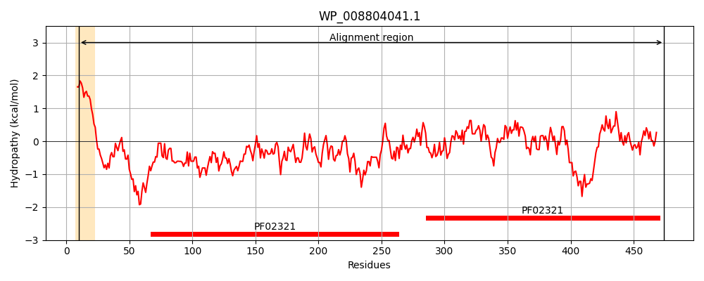
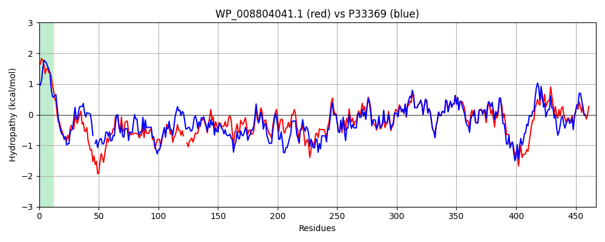

Hit Accession: P33369
Hit TCID: 1.B.17.3.10
Hit Description: gnl|BL_ORD_ID|9910 gnl|TC-DB|P33369|1.B.17.3.10 Putative multidrug resistance outer membrane protein MdtQ OS=Escherichia coli (strain K12) GN=mdtQ PE=5 SV=2
Mach Len: 467
e:0.000000
Query TMS Count : 1
Hit TMS Count: 1
TMS-Overlap Score: 0.800000
Predicted Substrates:CHEBI:383703;3,6-diamino-10-methylacridinium chloride, CHEBI:9501;tetraphenylarsonium, CHEBI:8641;puromycin
BLAST Alignment:
Score: 1646 , Bit scores: 638 bits, E-value: 0.0e+00, Alignment length: 467, Percentage identity: 69
Query: 10 LAALPLAIALAGCAPSHEVANPPQQQIPASHVSMDLPAAVKNGWPQTDWWKDYHDAQLDNLIQRALANAPDMQIAEQRIRLAEAQARMSQANLGPEMDFSADVERQRMSAEGLMGPFATDTD--GNTGPWYTNGTFGLTAGWDLDLWGKNRALVKARIGELKAQVAEQAQTRELLSGSVARLYWQWQTEAAIKAVLQQVKGEQNNIVTVDKALLQRGITNSAEGAENDINVSKTDQQLADVAGTMKEIEARLMALTNSQSQSLNLKPVSLPTVSAQLPDTLGYELLARRPDLQVAHWYIEASLSEVDAAKAAFYPDINLMAFLQQDALHLSDLFRHSAQQMGVTAGLTLPIFDSGRLNANLDIASAQNSLSIAQYNKAVVDAVNQVAKTASQVETLMAKSQQQQQVEKDAQRVVNLAQARMAAGILPGSRVSMAKLPALQERITALRLHGQWIDASIQLTSALGGGY 474
+A PL + LAGCAP HE QQ PA+ V LP A+K WW +YHD QL +LI AL NAPDMQ+AEQRI+LAEAQA+ GP++DFSAD+ERQ+MSAEGLMGPFA + G TGPWYTNGTFGLTAGW LD+WGKNRA V AR+G +KA+ AE+ QTR+LL+GSVARLYW+WQT+AA+ VLQQ++ EQN I+ D+ L Q GIT+S EG E DIN SKT QQL DVAG MK IEARL ALTN+Q++SL LKPV+LP V++QLPD LGY LLARR DLQ AHWY+E+SLS +DAAKAAFYPDINLMAFLQQDALHLSDLFRHSAQQMGVTAGLTLPIFDSGRLNANLDIA A+++LSIA YNKAVV+AVN VA+ ASQV+TL K+Q Q Q+E+DA RVV LAQAR AGI+ GSRVS A++PAL+ER L L GQW+DASIQLT ALGGGY
Sbjct: 10 IACFPLLLMLAGCAPMHETRQALSQQTPAAQVDTALPTALKMVGQTXQWWLEYHDNQLTSLINNALQNAPDMQVAEQRIQLAEAQAKAVATQDGPQIDFSADMERQKMSAEGLMGPFALNDPAAGTTGPWYTNGTFGLTAGWHLDIWGKNRAEVTARLGTVKARAAEREQTRQLLAGSVARLYWEWQTQAALNTVLQQIEKEQNTIIATDRQLYQNGITSSVEGVETDINASKTRQQLNDVAGKMKIIEARLSALTNNQTKSLKLKPVALPKVASQLPDELGYSLLARRADLQAAHWYVESSLSTIDAAKAAFYPDINLMAFLQQDALHLSDLFRHSAQQMGVTAGLTLPIFDSGRLNANLDIAKAESNLSIASYNKAVVEAVNDVARAASQVQTLAEKNQHQAQIERDALRVVGLAQARFNAGIIAGSRVSEARIPALRERANGLLLQGQWLDASIQLTGALGGGY 476 | Protein Hydropathy Plots: |
|---|
|  |  |
Pairwise Alignment-Hydropathy Plot:
|
|---|
|  |